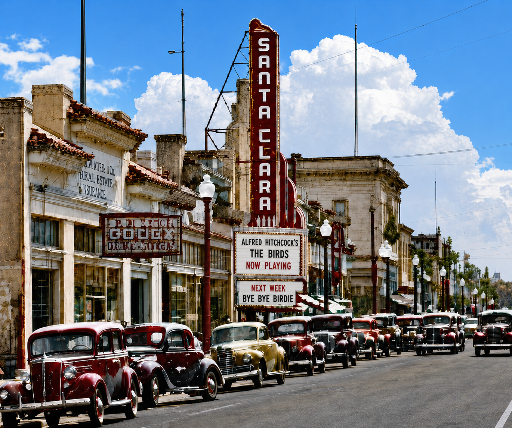

The story
Santa Clara had a real downtown. Then it didn't.
In the name of urban renewal, the center of our city was demolished and replaced with unrelated apartments, an office building, and two strip malls — all surrounded by acres of parking lots.
For generations, Santa Clarans had a walkable downtown: storefronts, theaters, and streetcars on a connected grid. In 1964 it was torn down, and the social center of the city went with it. Santa Clara became one of the only major American cities without a downtown.
Look at the photos and you'll see that Santa Clara's once elegant street grid has been erased. Franklin Street has been replaced by city-owned parking lots, strip malls, and an apartment complex that expanded right over Santa Clara's original Main Street.
We're citizens and voters dedicated to correcting what the Mercury News called the worst local decision in the last 50 years. 5,300 and counting, we're working to bring it back. Not as nostalgia, but as a living, mixed use heart for the city that blends our history with thoughtful modern design.
